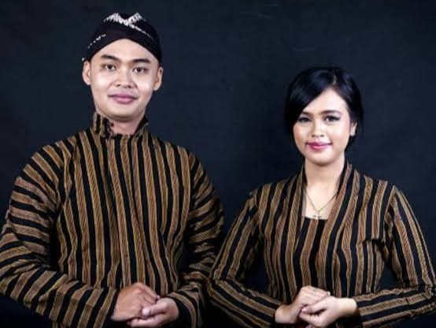
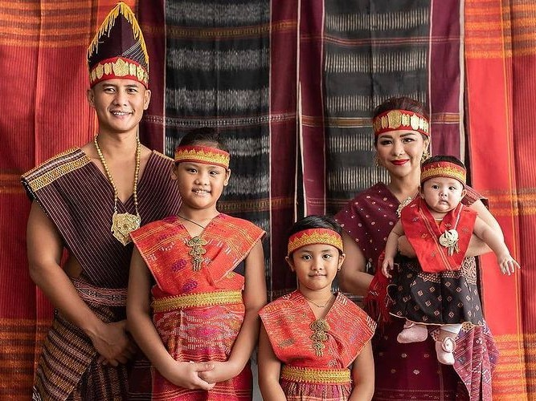

Selamat Datang
Jelajahi keindahan busana tradisional dari berbagai penjuru Nusantara.
Baju Daerah Populer

Kebaya (Jawa)
Baju elegan yang biasa dipakai dalam acara adat dan pernikahan.

Ulos (Batak)
Kain tenun khas yang sarat makna dan budaya, digunakan dalam upacara adat.